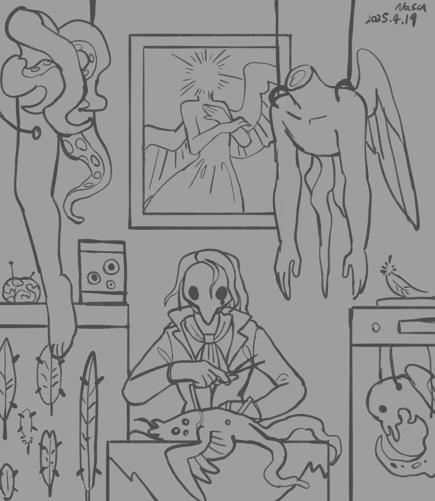
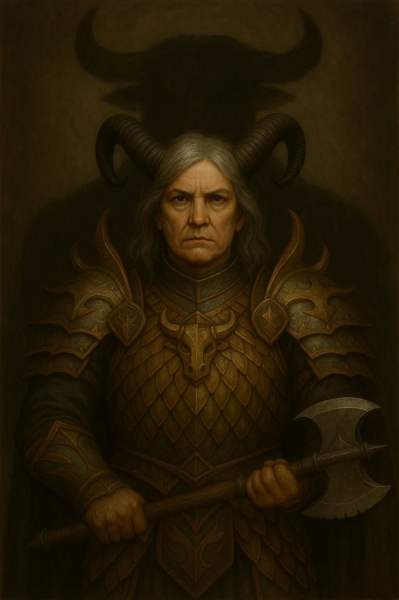
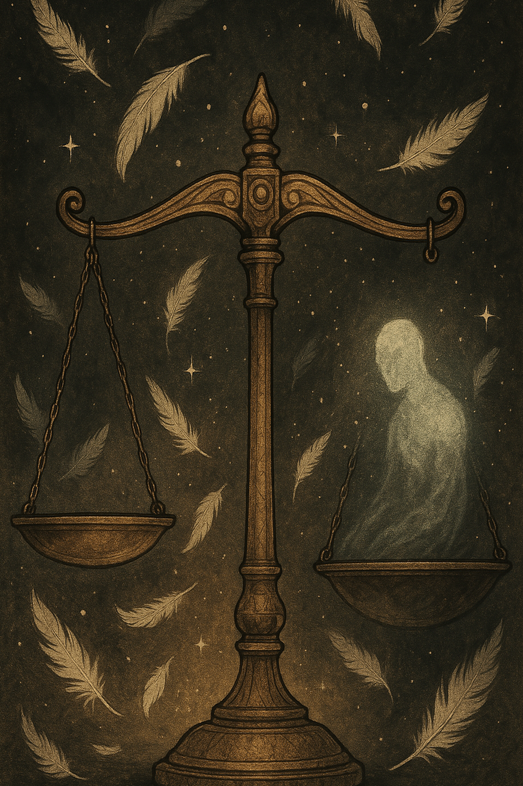
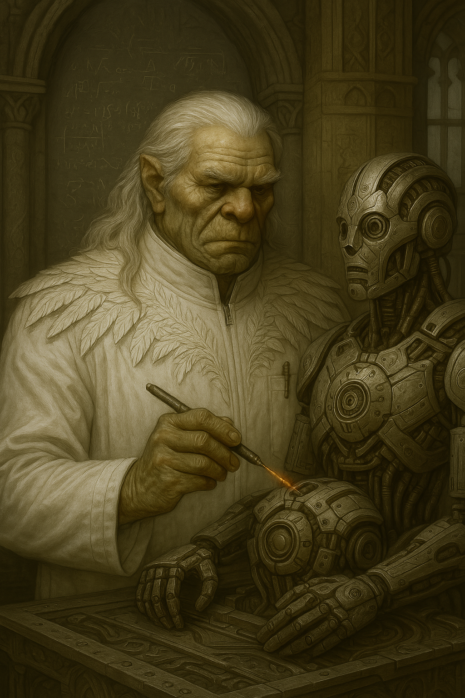

Chapter 3: Broken Angels
Requiem of the Feathered Estate


Requiem of the Feathered Estate
15051.09.14
離開餐廳後，GoR走在最後。當他踏入長廊時，已不見夥伴們的身影，隻身一人穿梭在滿滿賓客與羽僕的空間。
GoR在長廊上看見一幅疑似庫登的畫像，不過比起他所熟悉的樣子，更加蒼老，且身上穿的不是長袍，而是像戰士穿著的盔甲，手上甚至持著一把武器。甚至，有個高大的牛頭身影籠罩在庫登的背後。GoR感到困惑，但也無法得到更多資訊，因此他決定和身邊的賓客攀談。

賓客們說著這畫像的主人已經來到莊園很久，好幾年的時間了。不過不同賓客間的話語，似乎也有些出入。但他們都有提到一些看起來格格不入的人，似乎在宴會中不怎麼放鬆，種種描述，讓GoR猜測這些人便是他的冒險夥伴。
GoR打開了一扇門，發現是通往地下的樓梯。他不太確定走下去是否是好的選擇，因此他也將視線所及能看到的門通通都打開，卻發現都是通往同一座樓梯。在嘗試與羽僕詢問後，他決定還是走下樓梯去，而那名羽僕也跟隨其後。
地下室是一間小型的牢房，牢房深處有個窩在角落的身影，讓GoR感到些許熟悉。在羽僕火把的照射下，GoR看得更清楚了。雖然他沒有見過岡斯，但他從攀附在他身上的孽物蘿絲說的話，對岡斯已經非常熟悉了。那隻蜷縮在角落的孽物，就是岡斯。GoR再更仔細看，發現岡斯不僅被銬住，背後還被生硬的插上了金屬製的「翅膀」，看起來悲慘又痛苦。
「那是利希恩大人失敗的實驗品。」羽僕不帶情緒的說道。GoR詢問，既然是失敗品，那是否能讓他帶走？但羽僕只回應，這不是他能決定的。GoR將身上的三隻孽物從牢房的柵欄送了進去，請他們把岡斯搬出來。蘿絲在岡斯身邊逡巡，表露出類似關懷、愛護的神情，但另外兩隻孽物，則似乎沒有特別的表現。也因為岡斯的身體被固定住，孽物們沒有辦法把他搬走。GoR決定將孽物們召回，上來去尋找利希恩或是其他可能的幫忙。蘿絲對於離開岡斯感到依依不捨，但也還是聽了GoR的話，乖乖回到他身上了。
走上樓，GoR走入了餐廳。他看見餐廳與他離開前的擺設有所不同，是類似自助餐的形式。他在餐廳找了幾名賓客詢問，詢問關於他的夥伴們的消息，然而賓客們的答案有所出入，GoR也利用這樣的機會，想製造個小衝突。在衝突擴大錢，利希恩從角落緩緩走出，拍拍兩名賓客的肩膀，衝突瞬間消失，人群也一哄而散。GoR試圖和利希恩搭話，但得到的都是不怎麼有用的資訊。
離開餐廳，GoR回到長廊，想回到地下室去，因此開了剛剛的那扇門，但此時門通往的方向不是剛才的樓梯，而是一座漆黑的房間，裡頭有一支點亮的蠟燭。門關上，GoR向前走，看見一名穿著斗篷的人，示意著他坐下。從那人的皮膚，GoR感受到一股莫名的熟悉。很快地，他便發現那是蘿絲—不過是「人形化」的蘿絲。這時，他才發現蘿絲已經在他肩膀上消失了。
「蘿絲」拿出一疊卡牌，要GoR抽一張牌。GoR抽了五張，翻開後卻發現裡面只有一張有圖樣。

「GoR，這是你的牌。天秤的一端，有一個靈魂，另一端是空的。你要如何將天秤平衡呢？是放上另一個靈魂嗎？如果是你的靈魂，你願意線上嗎？他夠重嗎？」蘿絲無情地說著。「你不需要馬上做出決定，等儀式時，回答利希恩就好。」
GoR看著蘿絲把其他的牌收起，他也站了起來，對房間做了簡單的探索。他發現房間的陰暗角落，躲藏了不少小型的孽物，但只要他一接近，孽物就試著逃離他，屢試不爽。最終GoR發現也沒有辦法做其他事，便離開了房間。
一推開門，GoR便看見了他的冒險夥伴們從隔壁的門口走出。其他冒險者們見到GoR，他們消失了好久的夥伴，便聚集在一起，同步了一下資訊。GoR引導他們看向庫登異樣的肖像畫，庫登對此似乎不是太喜歡。烏波將畫取下後，掛在庫登的角上，喊著「庫登從畫裡出來了，和GoR一樣！」。
接著冒險者們又走進了一扇門，門後是羅特曾去過的那間酒館。大家找了座位坐下來。烏波和庫登看見利希恩站在酒館後方的角落，手上拿著一本和平常不太一樣的書，但一樣在抄寫。他們向利希恩走去，而利希恩也大方地將書遞給他們，便走了。書的封面寫著「阿莫雷」，那是利希恩的姓氏。不過內容是由月神語和通用語交錯寫著的，冒險者們只能看懂如「天使」、「翅膀」「芬尼爾」等關鍵字，其他都看不懂。
大家感到疲倦，在酒館找了地方簡單休息。除了GoR外，每個人都睡著了，但不久後大家都清醒了，活力滿滿。不過，烏波和庫登眼中看見的其他夥伴，都是如在宅邸中看見的版本，而非年輕的模樣。賽柏提議應該要去找到利希恩，把他殺了，才有辦法離開這座宅邸，GoR也同意這個做法。然而，羅特對於利希恩沒有那麼強的殺機，但也同意必須要找到他。
大家走回長廊上，也看見了最後一名夥伴的肖像。那是賽柏，身著如實驗用的服飾，正為機器人加工著，很明顯的，他的肖像中完全沒有任何與自然或植物相關的內容。

大家再次選了個房間走入，這回，是烏波和庫登進去過的劇場，不過劇場內一個人也沒有，只有舞台是亮的。羅特和烏波踏上舞台，做了探索。烏波才剛確認完沒有看見小丑，轉頭就看見小丑的臉貼在他眼前，嚇得他趕緊揮了一拳。
小丑大喊最後一齣戲就要上演了，烏波也就乖乖回到座椅上了。
布幕拉開，一名裝扮成利希恩的羽僕正跪拜著，他身邊的多名女子在怎麼追求他，他也無動於衷，直到他的眼前出現一道白光，一名由羽僕扮演，像是天使般的角色，從天而降，他便站起身，與天使互相抓緊對方的雙手，望向對方的眼底。
布幕再次拉開時，一座桌子前，利希恩和天使並肩坐著，利希恩寫著字，不時拿起紙，向著天使念起他寫的詩句，內容像是「若你愛得夠深，世界會為你改寫名字」等。但一段時間後，天使卻突然僵直，在利希恩觸碰、擁抱後，卻化為粉碎，只留下利希恩仰天長嘯。
布幕最後一次拉開，利希恩的身邊是各種不同生物不完整的遺體。他專注到像是瘋狂似的將金屬插在這些身體上，製造出像是天使，但又駭人的東西。他始終沒有得到滿意的答案，只能抱頭痛哭。
布幕放下，燈光暗下，冒險者們聽見背後傳來拍手聲。他們轉頭一看，利希恩坐在離出口最近的角落，正站起身要離開。烏波試圖對他攻擊，擊中後卻沒有任何影響。羅特趕緊追起，跑到長廊後，卻發現滿滿的賓客，讓他完全找不到利希恩。
冒險者們跟上，大家聽見賓客們紛紛在等著儀式開始，但誰也不知道到底何時會開始。不耐煩之下，大家走入餐廳，卻發現此時餐廳空無一人，自助餐內的食物早已被吃光，只留下骨頭，或早已腐敗。烏波化身為一隻火元素，想把餐廳燒了，而羅特則發現了餐廳的後門，通往的是一間小型的儲藏室，但裡面除了餐具外，沒有什麼有用的東西。
烏波踏出餐廳，發現長廊上的賓客都不見了，但空中飄下來數不清的羽毛。烏波用身上的火焚燒，羽毛落到地上時都已焦黑。不知道儀式到底何時開始，怎麼抵達，冒險者們感到茫然。
大家嘗試把所有門打開，卻發現都通往餐廳的方向，而且所有門都通往同個位置。冒險者們嘗試各種可能性，發現各個門內的空間就像是複製的空間一樣，若走入後再走出，會出現複數個自己在長廊上，物品，如金錢，當然也是。不過冒險者們自己可以分辨出哪個是本題，哪個是自己的複製體，若將複製體推回餐廳，他們就會消失。
烏波嘗試把門與門之間的門框燒掉，發現門框兩側的餐廳合併在一起了。不過這也證實，無法確實地將整個宅邸燒毀。
最後當烏波再次走向大門時，他發現自己在一個陰暗的空間內，眼前有一些微光。其他冒險者們發現烏波消失，便也趕緊跑了過去。大家都出現在這個陰暗空間內，眼前的光線則是來自他們不久前看見的儀式場地內的王座。但這次，王座上不是空的。
GoR知道，王座上扣緊的，是岡斯。
冒險者們也發現他們的左右周邊，都站滿了人。賓客、羽僕們都在這裡，異常安靜地凝視、等待著。
腳步聲再次從遠方傳來。烏波衝向前去，嘗試以火元素之姿擁抱手握著月神王冠的利希恩，卻發現這個利希恩竟然只是個幻象而已，冒險者們也發現坐在王座上的岡斯，也只是個幻影。
接著真實的利希恩走了出來。
「所以我說是需要預演的吧。」利希恩笑了一聲。「差不多是儀式開始的時間了。」
15051.09.14
After leaving the restaurant, GoR walked last. When he stepped into the corridor, his companions were no longer around, and he was walking alone through the space filled with guests and servants.
GoR saw a portrait of Kudan in the corridor, but it was older than the one he was familiar with. He was not wearing a robe, but armor like a warrior, and he even held a weapon in his hand. There is even a tall bull-headed figure looming behind Kudan. GoR was confused, but couldn't get any more information, so he decided to talk to the guests around him.
The guests said that the owner of this portrait has been in the manor for a long time, several years. However, there seemed to be some discrepancies in the words spoken by different guests. But they all mentioned some people who looked out of place and seemed not very relaxed during the banquet. Various descriptions made GoR guess that these people were his adventure partners.
GoR opened a door and found a staircase leading underground. He wasn't sure whether walking down was a good option, so he opened every door he could see, only to find that they all led to the same staircase. After trying to inquire with the feather servant, he decided to go down the stairs, and the feather servant followed him.
The basement is a small cell. There is a figure nestled in the corner deep in the cell, which makes GoR feel a little familiar. Under the light of the feather servant's torch, GoR could see more clearly. Although he has never seen Guns, he is already very familiar with Guns from what the evil creature Rose clinging to him said. That evil thing huddled in the corner is Guns. GoR Looking more closely, I found that Guns was not only cuffed, but also had metal "wings" stuck on his back. He looked miserable and painful.
"That was Lord Lysien's failed experiment." The feather servant said without emotion. GoR asked, since it is a failure, can he be allowed to take it away? But the feather servant only responded that this was not his decision. GoR sent the three monsters he had on him through the bars of the cell and asked them to move the Guns out. Rose hovered around Guns, showing a look of care and love, but the other two monsters didn't seem to show any special behavior. Also because Guns' body was immobilized, the monsters couldn't move him away. GoR decided to recall the evil creatures and come up to find Lysien or other possible help. Rose felt reluctant to leave Guns, but she still listened to GoR and returned to him obediently.
Walked upstairs and GoR walked into the restaurant. He saw that the restaurant was different from the one before he left. It was similar to a buffet. He asked several guests in the restaurant to ask for news about his partners. However, the guests' answers were different. GoR also took advantage of this opportunity to create a small conflict. As the conflict escalated, Lysien slowly walked out from the corner and patted the two guests on the shoulders. The conflict disappeared instantly and the crowd dispersed. GoR tried to talk to Lysien, but all he got was not very useful information.
Leaving the restaurant, GoR returned to the corridor and wanted to go back to the basement, so he opened the door just now, but the direction the door led to was not the stairs just now, but a dark room with a lit candle in it. The door closed, GoR walked forward and saw a man in a cloak, motioning for him to sit down. From that person's skin, GoR felt an inexplicable familiarity. Soon, he discovered that it was Rose—but Rose in "human form." Only then did he realize that Rose had disappeared over his shoulder.
"Rose" took out a stack of cards and asked GoR to draw a card. GoR drew five cards, but when he opened them, he found that only one of them had a pattern.
"GoR, this is your card. There is a soul on one end of the scale, and the other end is empty. How do you balance the scale? Put another soul? If it is your soul, are you willing to go online? Is it heavy enough?" Rose said ruthlessly. "You don't need to make a decision right away. Just answer Lysien when you wait for the ceremony."
GoR Watching Rose put away the other cards, he also stood up and did a brief exploration of the room. He found that there were many small evil things hiding in the dark corners of the room, but as soon as he approached, the evil things tried to escape from him, and they failed every time. Finally GoR realized there was nothing else he could do and left the room.
As soon as he opened the door, GoR saw his adventure partners walking out of the next door. When other adventurers saw GoR, their long-lost friend, they gathered together to synchronize information. GoR directed them to look at Kudan's strange portrait, which Kudan didn't seem to like too much. Ubbo took off the painting, hung it on the corner of Kudan, and shouted "Kudan came out of the painting, just like GoR!".
Then the adventurers walked into another door, and behind the door was the tavern that Lott had been to. Everyone found a seat and sat down. Ubbo and Kudan saw Lysien standing in the corner behind the tavern, holding a different book than usual, but still copying. They walked toward Lysien, who graciously handed them the book and left. The cover of the book says "Amoret," which is Lysien's last name. However, the content is written in Lunar Language and Common Language. Adventurers can only understand keywords such as "angel", "wings" and "Phynoir", but not others.
Everyone felt tired and found a place to rest briefly in the tavern. Everyone fell asleep except GoR, but soon everyone was awake and full of energy. However, the other partners that Ubbo and Kudan saw in their eyes were the versions they saw in the mansion, not the younger ones. Psyber suggested that we should find Lysien and kill him before we can leave this mansion. GoR also agreed with this approach. However, Lott doesn't have such strong murderous intentions for Lysien, but agrees that he must be found.
Everyone walked back to the corridor and saw the portrait of the last partner. That is Psyber, wearing experimental clothes and being processed by robots. It is obvious that there is no content related to nature or plants in his portrait.
Everyone once again chose a room and walked in. This time, it was the theater that Ubbo and Kudan had entered, but there was no one in the theater, and only the stage was lit. Lott and Ubbo took to the stage and explored. Ubbo had just confirmed that he had not seen the clown. He turned around and saw the clown's face right in front of his eyes. He was so frightened that he quickly punched him.
The clown shouted that the last play was about to take place, and Ubbo returned to his seat obediently.
The curtain opened, and a servant dressed as Lysien was kneeling down. He was indifferent to how many women around him were pursuing him, until a white light appeared in front of his eyes, and an angel-like character played by a servant fell from the sky. He stood up, and the angels grabbed each other's hands and looked into each other's eyes.
When the curtain opened again, Lysien and the angel were sitting side by side in front of a table. Lysien was writing. From time to time, he picked up the paper and read the poem he wrote to the angel. The content was like "If you love deeply enough, the world will rewrite your name" and so on. But after a while, the angel suddenly stiffened, and after Lysien touched and hugged him, it shattered into pieces, leaving only Lysien looking up to the sky and screaming.
The curtain opened for the last time, and next to Lysien were the incomplete remains of various different creatures. He focused so much that he inserted metal into these bodies like crazy, creating something that was angelic but terrifying. He never got a satisfactory answer and could only cry.
The curtain was lowered, the lights dimmed, and the adventurers heard clapping from behind. They turned around and saw Lysien sitting in the corner closest to the exit, standing up to leave. Ubbo tried to attack him, but the hit had no effect. Lott hurriedly chased after him and ran to the corridor, only to find that there were so many guests that he could not find Lysien at all.
The adventurers followed, and everyone heard that the guests were waiting for the ceremony to start, but no one knew when it would start. Impatiently, everyone walked into the restaurant, only to find that the restaurant was empty at this time. The food in the buffet had been eaten up, leaving only bones, or it had already rotted. Ubbo transformed into a fire element and wanted to burn down the restaurant, while Lott discovered the back door of the restaurant, which led to a small storage room, but there was nothing useful in it except tableware.
Ubbo Stepped out of the restaurant and found that all the guests on the corridor were gone, but countless feathers were floating in the air. Ubbo burned it with the fire on his body, and the feathers were burnt black when they fell to the ground. Not knowing when the ceremony would begin or how to arrive, the adventurers felt at a loss.
Everyone tried to open all the doors, but found that they all led to the direction of the restaurant, and all the doors led to the same location. The adventurers tried various possibilities and found that the space inside each door was like a replicated space. If they walked in and then walked out, multiple versions of themselves would appear on the corridor, along with items, such as money, of course. However, the adventurers can tell which one is the current question and which one is their own copy. If they push the copy back to the restaurant, they will disappear.
Ubbo tried to burn the door frame between the doors and found that the restaurants on both sides of the door frame were merged together. However, this also confirmed that it was impossible to definitely burn down the entire mansion.
Finally when Ubbo walked towards the door again, he found himself in a dark space with some glimmer of light in front of his eyes. The other adventurers noticed that Ubbo had disappeared and ran over. Everyone appeared in this dark space, and the light in front of them came from the throne in the ceremony venue they saw not long ago. But this time, the throne is not empty.
GoR knows that the one fastened to the throne is Guns.
The adventurers also found that there were people standing around them on their left and right. The guests and servants are all here, staring and waiting in unusual silence.
The sound of footsteps came from the distance again. Ubbo rushed forward and tried to hug Lysien, who was holding the Luna Crown in the form of fire element, but found that Lysien was just an illusion. The adventurers also discovered that Guns sitting on the throne was also just an illusion.
Then the real Lysien walked out.
"So I say it needs to be rehearsed." Lysien laughed. "It's almost time for the ceremony to begin."